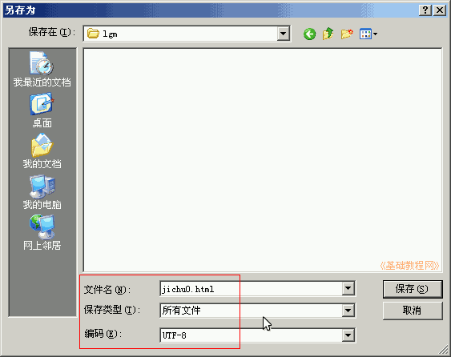
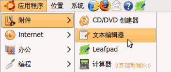
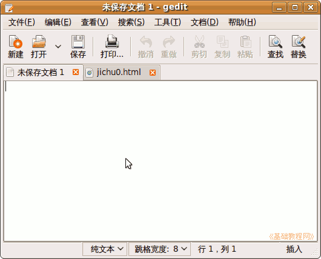
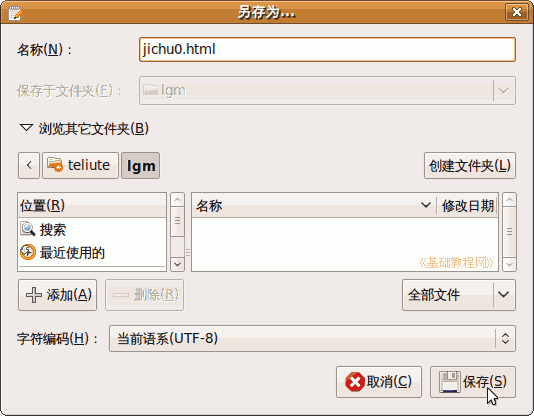
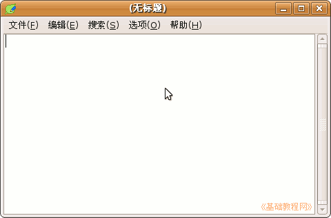
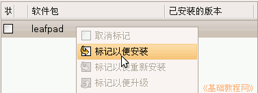
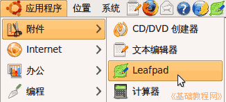
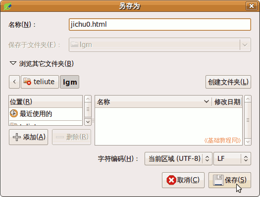
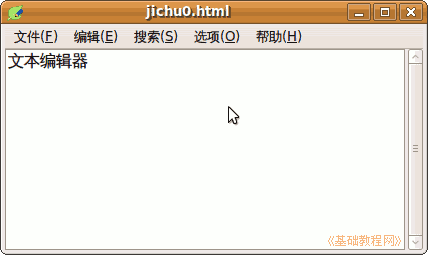

CSS 基础入门教程
作者：TeliuTe 来源：基础教程网
常用的文本编辑器有记事本、gedit、leafpad 等，都可以用来编辑文本文件，下面我们来看一个练习；
1、记事本
1）在 Windows 里，依次点“开始－所有程序－附件－记事本”，打开程序；
2）打开记事本后，在工作区里输入文本内容；

3）保存的时候注意，保存到自己的文件夹，文件名输带扩展名的全名，类型选所有文件，编码选 UTF-8；

2、文本编辑器(gedit)
1）在 Ubuntu 里可以使用文本编辑器，点菜单“应用程序－附件－文本编辑器”；

2）进入后在工作区输入文本，如果是网页类别的，点菜单“查看－突出显示模式－标记语言－HTML”，高亮显示代码；

3）保存的时候注意，保存到自己的文件夹，文件名输入带扩展名的全名，类型默认 UTF-8 了；

3、Leafpad 文本编辑器
1）Leafpad 是一个小巧的文本编辑器，简单快捷类似于记事本；

2）需要先安装，点菜单 “系统－系统管理－新立得软件包管理器”，进入窗口后搜索 leafpad；

3）然后点菜单“应用程序－附件－Leafpad”，一个绿色的树叶就可以打开它；

4）使用方法相同，保存的时候也是需要保存全名，跟 gedit 相同；

4、练习
选择上面的一个文本编辑器，输入“文本编辑器”，保存文件名为 jichu0.html

本节学习了文本编辑器的基本操作，如果你成功地完成了练习，请继续学习下一课内容；
本教程由86团学校TeliuTe制作|著作权所有
基础教程网：http://teliute.org/
美丽的校园……
转载和引用本站内容，请保留版权信息和本站链接。